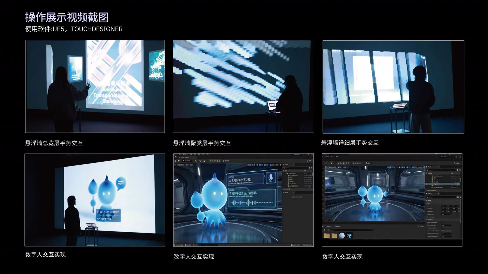
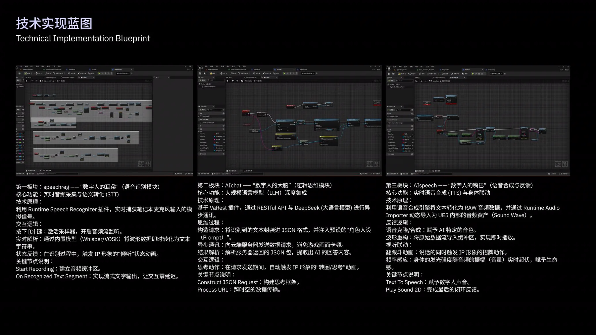
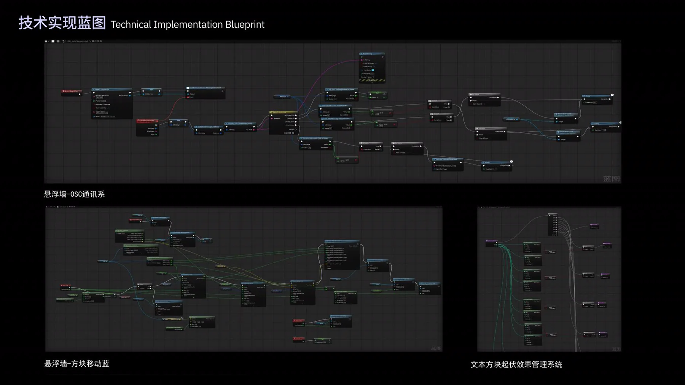
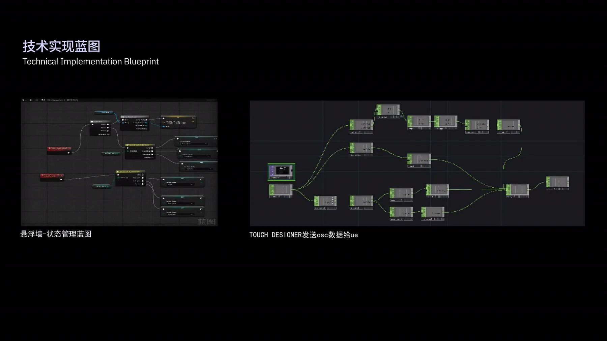
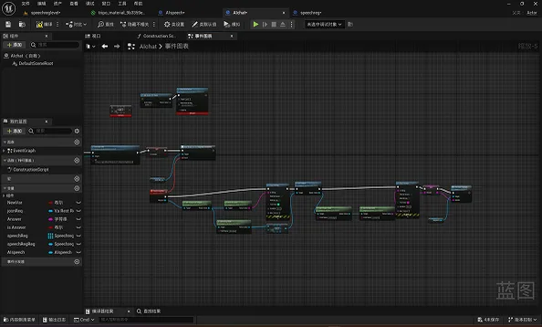
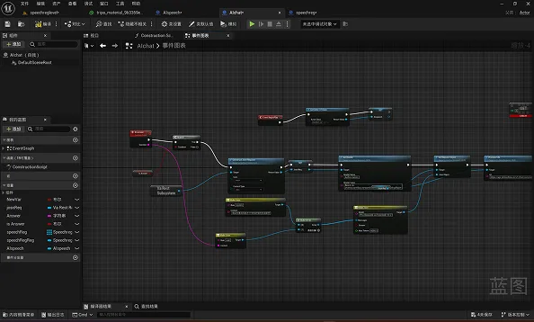
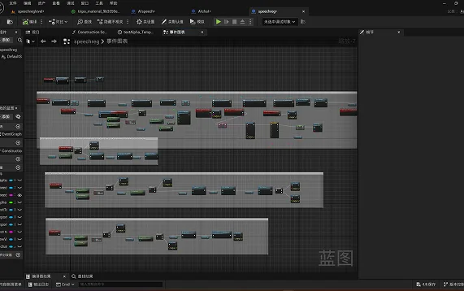

Voice-Interactive AI NPC
A UE5 Blueprint NPC driven by voice, Kinect and OSC commands.
AI NPC: Interaction and Implementation
Gallery/04 imagesOriginal production notes · Chinese
Production notes
一、作品简介（我与AI的故事）
项目概述
本项目旨在虚幻引擎 5 (UE5) 中从零搭建一个具备高度拟真交互体验的 AI NPC 助手。系统整合了语音识别 (STT)、大语言模型 API (DeepSeek)、语音合成 (TTS) 以及动态动画状态机。玩家可以通过麦克风直接与 NPC 对话，NPC 能够实时理解语义，在“思考”期间播放过渡动画，并在接收到文本回复后同步触发相应的肢体反馈（如后空翻、表达动作）和语音播报。
开发背景与挑战：在“无教程”的荒野中摸索
市面上关于 UE5 结合大模型的教程大多只停留在简单的文本框问答，而涵盖“语音输入 -> 云端大模型 -> 自定义结构体解析 -> 动画状态机动态打断与切换 -> 语音口型同步”的完整端到端教学几乎为空白。
这就意味着我必须脱离“照猫画虎”的阶段，直接面对底层逻辑的冲突。在开发过程中，我遇到了几个极其棘手的技术瓶颈：
- 动画状态机的“时机”与“死锁” (State Machine Logic)
即使变量成功传递，动画系统也常常“装死”。我遭遇了指令时机抢跑的问题——在语音刚结束时同时触发了“思考”和“回答”变量，导致状态机逻辑打架；或是遇到了变量名不匹配的“死锁”（如主蓝图传递IsAnswer，但状态机入口却被IsTalking锁死），导致 NPC 在场景中变成无法互动的木桩。 - 非标底层数据的解析 (Custom Struct Parsing)
在对接 LLM API 时，需要构建复杂的嵌套 JSON 格式。UE5 原生并未提供直观的工具，面对凭空出现的Make Json节点需求，我必须自己摸索 UE5 的 Structure（结构体）底层机制，手动反向工程出符合 API 规范的数据结构。
破局：将 Google AI Studio 作为“结对编程”搭档
面对这些网上搜不到现成答案的代码报错和逻辑断层，我改变了传统的搜索引擎排错法，转而将 Google AI Studio (Gemini) 引入我的开发工作流，将其作为我的高级技术顾问进行结对编程。
- 视觉化 Debug 攻坚： 当遇到报错时，我将蓝图连线截图（包括执行流白线、数据流蓝线）提供给 AI。通过多轮对话，AI 帮我精准定位了“野指针（Accessed None）问题，并指导我使用
Promote to Variable缓存对象引用，打通了主蓝图与动画图表 (ABP_IP) 的通信问题。 - 重构状态机逻辑： 在 AI 的引导下，我重新梳理了“感知层（语音触发） -> 思考层（等待 API 时播放过渡动画） -> 表现层（拿到数据后触发核心动作）”的行为树架构。通过我反复反复反复的问AI，我们修正了状态转换规则 (Transition Rules) 中的变量锁，理清了
Set Is Thinking和Set Is Answer触发的先后时序，让 NPC 的动作反馈变得极具生命力。 - 从工具使用者到架构理解者： 借助 AI 的剖析，我也慢慢的真正理解了 UE5 中
Actor与Character的组件差异、数据流转的生命周期，以及 API 接口如何与游戏引擎的数据结构体相映射。
个人收获
这个项目完成了一个复杂的功能模块的同时，也验证了我的开发方法论。它证明了我能够在缺乏完整前人经验参考的领域，凭借对底层逻辑的拆解能力，以及对前沿 AI 辅助开发工具的敏锐应用，独立创造从0到1 ，完成从“提出设想”到“工程落地”的全过程。




二、实现原理&技术解析
第一板块：speechreg —— “数字人（AI NPC）的耳朵”（语音识别模块）

核心功能：实时音频采集与语义转化 (STT)
技术原理：利用 Runtime Speech Recognizer 插件，实时捕获笔记本麦克风输入的模拟信号。
交互逻辑：按下 [D] 键：激活采样器，开启音频流监听。
实时解析：通过内置模型（Whisper/VOSK）将波形数据即时转化为文本字符串。
状态反馈：在识别过程中，触发 IP 形象的“倾听”状态动画。
关键节点说明：
Start Recording：建立音频缓冲区。
On Recognized Text Segment：实现流式文字输出，让交互零延迟。
第二板块：AIchat —— “数字人（AI NPC）的大脑”（逻辑思维模块）

核心功能：大规模语言模型（LLM）深度集成
技术原理：基于 VaRest 插件，通过 RESTful API 与 DeepSeek (大语言模型) 进行异步通讯。
思维过程：
构造请求 —— 将识别到的文本封装进 JSON 格式，并注入预设的“角色人设（Prompt）”。
异步通讯 —— 向云端服务器发送数据请求，避免游戏画面卡顿。
结果解析 —— 解析服务器返回的 JSON 包，提取出 AI 的回答内容。
思考动作：在请求发送期间，自动触发 IP 形象的“转圈/思考”动画。
关键节点说明：
Construct JSON Request：构建思考框架。
Process URL：数据传输。
第三板块：AIspeech —— “数字人（AI NPC）的嘴巴”（语音合成与反馈）

核心功能：实时语音合成 (TTS) 与身体联动
技术原理：
利用语音合成引擎将文本转化为 RAW 音频数据，并通过 Runtime Audio Importer 动态导入为 UE5 内部的音频资产（Sound Wave）。
反馈逻辑：
语音克隆/合成：赋予 AI 特定的音色。
波形重构：将原始数据流导入缓冲区，实现即时播放。
视听联动：
翻跟斗动画：说话的同时触发 IP 形象的招牌动作。
频率感应：身体的发光强度随音频的振幅（音量）实时起伏，赋予生命感。
关键节点说明：
Text To Speech：赋予数字人声音。
Play Sound 2D：完成最后的闭环反馈。